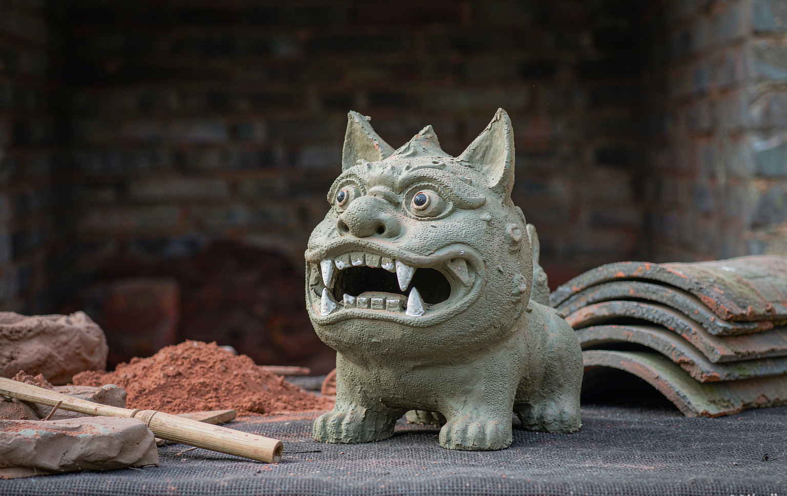

01 / 过去 · 形制与工艺
胎 · 火 · 脊
鹤庆的瓦猫不是塑像，是瓦。它和屋瓦用同一批泥、进同一座窑；坏了不修，换一片。
所以它从来不是一件"作品"，而是房子的一部分——
位置、材料、寿命，都跟着房子走。

素胎未施釉。摄于窑口工作台：泥坯、竹塑刀、红褐陶土粉、旧青瓦。
02
01
泥
青、白、红、黄四色陶土掺和，取的是烧砖瓦的窑泥。不上釉，出窑便是青灰的素胎。
02
塑
没有模型，全凭一手捏成。头做得比身子大，嘴开到极限，额上刻一个"王"字。
03
窑
装窑时放在最上一层，与砖瓦同烧。鹤庆的老窑，要烧七天七夜。
04
脊
安放要请人测方位，面向吉位。它在正脊最高处，背对屋子，朝着外面。
形制与工艺据：鹤庆县人民政府《你可能不认识"郜金福"，但一定听过"猫金福"》（2026）；中国农村网《瓦猫 屋脊上的守望者》（2019）；"当代中国"《瓦猫寻踪：屋脊上的非遗》（2026）。剑川一支用红土、柴窑还原烧，出黑陶；本作取鹤庆青灰素胎一路。